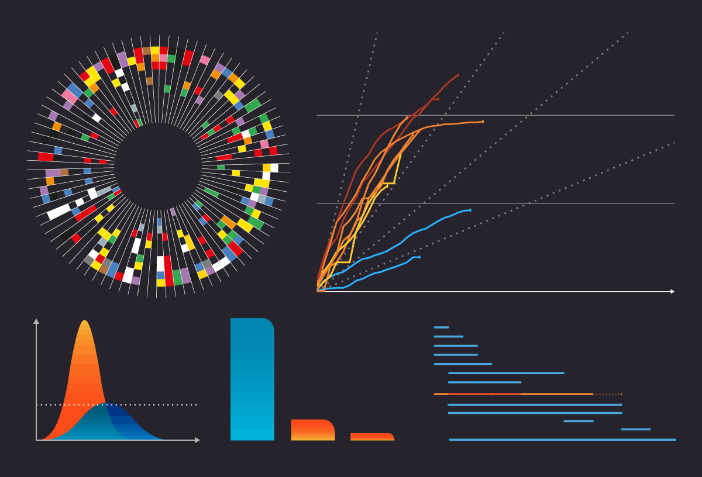
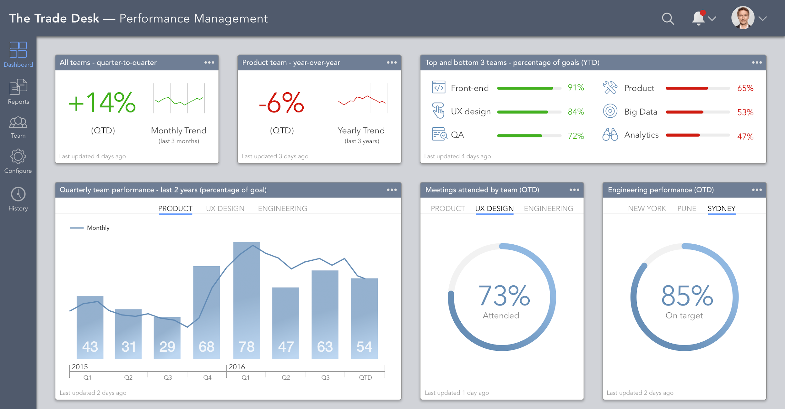

Home
Data Graphs
Line Graph
Pie Chart
SA Provinces
Blogs
Wireframes
Contact
Politics in representation.
(Kidd, 2016:22) argues that for media semiotics, the overarching influence is how the content is then separated from the form...
read more
Data driven Storyteling.
Data that is visualized on the web represents information as objects and scenes and events that are embedded in the discourse of storytelling...
read more
Data and ethics.
When thinking about the meta-ethical implications of technological devices, which generate data streams, it is important to approach the issue from the point of view of the set of devices...
read more
Visualizations and the audience
(Janiszewski, 1993) argues that” the first glance exposure to a brand name or product package can encourage a consumer to have a more favorable attitude toward the brand
read more
Artistic data visualisations.
Visualisations that seems to solicit attention from both effectiveness and cosmetics inclined audiences....
read more

Is information beautiful?.
In his work on the glass house effect Hirsch (2013) argue that Big Data is the new oil...
read more

The Medium is the Message.
The era of new media, media art, or digital art has been characterized by the importance of the way we send and receive messages, over the message itself...
read more
Reflection Exam Blog
The ‘Whole’ becomes a mere a provisional visualization which can be modified and reversed at will...
read more